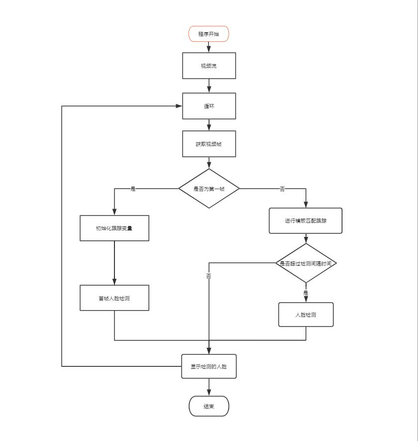
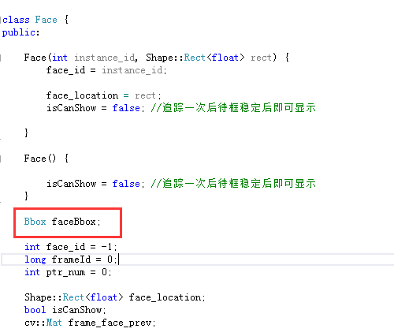
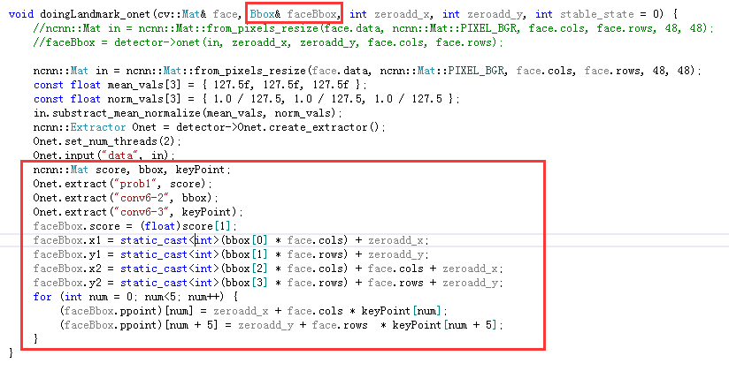
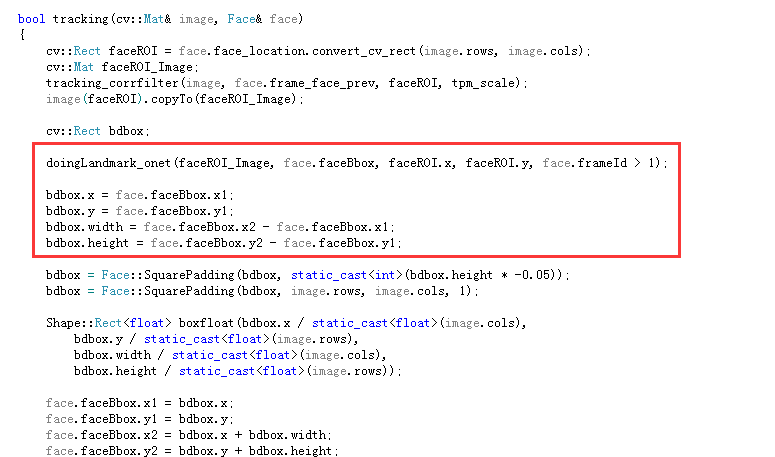
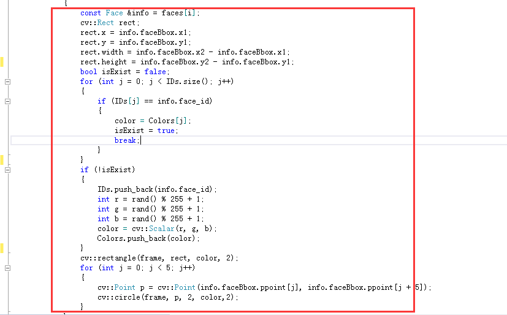

原文连接:https://www.cnblogs.com/huiwei13/p/11797097.html
一、简介
人脸识别已经成为计算机视觉领域中最热门的应用之一，其中，人脸信息处理的第一个环节便是人脸检测和人脸跟踪。人脸检测是指在输入的图像中确定所有人脸的位置、大小和姿势的过程。人脸跟踪是指在图像序列中确定各帧间人脸的对应关系的过程，即确定每个人脸的运动轨迹及其大小变化的过程。
人脸跟踪最初的应用源于人类识别。人脸识别是指将输入的人脸图像与已知人脸库中的模型进行比较，以确定是否存在相匹配的人脸。随着近几年信息化进程日益加快,安全认证系列应用的涌现，这使得高度自动化的人脸识别系统的研究成为一个热点。以往大多数系统要求被识别者固定在摄像机前的某一位置, 十分不便，且在某些场合如监控领域也无法实现。如何基于视频，在复杂背景中直接检测、定位运动的人脸，并加以识别，这一问题迫切需要得到解决。
二、HyperFT
这是一个移动端快速视频多人脸跟踪的开源项目，项目是基于mtcnn人脸检测加上简单的模板匹配进行人脸跟踪，算法简单但效果显著，移动端速度可达150帧以上，该项目的优点是可实现多人脸跟踪。
github地址：https://github.com/zeusees/HyperFT
三、代码算法解析
HyperFT项目的多人脸跟踪算法分为三大部分：
第一部分是初始化。通过mtcnn的人脸检测找出第一帧的人脸位置，然后根据结果对人脸跟踪进行初始化；
第二部分是更新。首先利用模板匹配进行人脸目标位置的初步预判，再结合mtcnn中的onet对人脸位置进行更加精细的定位，最后通过mtcnn中的rnet的置信度来判断跟踪目标是否为人脸，防止当有手从面前慢慢挥过时，框会跟着手走，导致无法跟踪到真正的人脸；
第三部分是定时检测。通过在更新的部分中加入一个定时器来做定时人脸检测，从而判断中途是否有新的人脸加入，本项目在定时人脸检测中使用了一个trick——就是将已跟踪的人脸所在位置利用蒙版遮蔽起来，避免了人脸检测的重复进行，从而减少其计算量，提高了检测速度。

四、算法改进的思路
HyperFT项目是在当前已实现多人脸跟踪的开源项目中取得显著效果的项目之一，其优点是人脸跟踪速度快且可以进行对多个人脸的跟踪。由于使用的算法是基于mtcnn和模板匹配实现的，在进行多人脸跟踪时有一定的局限性，所以算法仍存在一定的可提升空间。
1、替换人脸检测模型：可将mtcnn的人脸检测模型替换成yufacedetectnet和RetinaFace等模型，人脸检测的时间即可不受人脸数量的影响。
2、替换目标跟踪算法：可将模板匹配算法替换成TLD和光流法等跟踪算法，相比于模板匹配，跟踪速度有一定的提升。
五、项目中加入五个关键点跟踪的实践
1、在HyperFT项目中的Face类中仅定义了人脸矩形的变量，如若需要加入五个关键点的跟踪则需要在Face类中需要定义一个Bbox类的faceBbox，这样Face即能保存人脸位置又能保存人脸关键点。

2、在原来的doingLandmark_onet函数的基础上重载函数，将传入的std::vector<cv::Point> &pts改为传入Bbox& faceBbox。

3、在tracking函数中修改doingLandmark_onet函数的调用

4、通过人脸跟踪中Face类中的faceBbox即可获得人脸的位置及其五个人脸关键点（main.cpp）

改进后的项目->GitHub地址：https://github.com/qaz734913414/Ncnn_FaceTrack

zeusee.com 智云视图